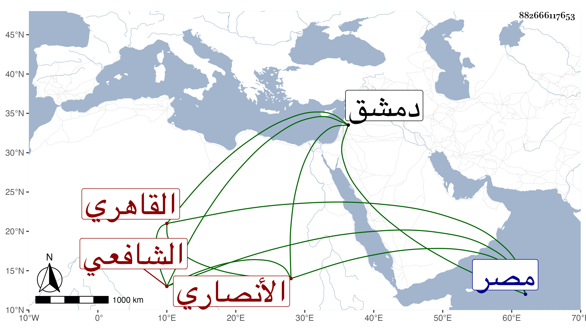

0902Sakhawi.DawLamic.ITO20230111-ara1.EIS1600.882666117653
Biography ID: 882666117653
أحمد بن عبد الرحمن بن عبد الله بن يوسف بن هشام الشهاب بن التقي ابن الجمال الأنصاري القاهري الشافعي أخو الولوي محمد الآتي وذاك أكبر ويعرف كسلفه بابن هشام . ولد سنة ثمان وثمانين وسبعمائة واشتغل كثيرا وأول ما أخذ العربية عن الشمس الشطنوفي ولم يلبث معه إلا يسيرا حتى برع فيها ثم أخذها عن قريبه الشمس العجيمي سبط ابن هشام وعظمه جدا بحيث أنه لما قدم العلاء البخاري ولازمه قال له أنك لم تستفد منه أكثر ما عندك فقال أوليس صرنا فيه على يقين . وكذا لازم العز بن جماعة في العلوم التي كان يقرئها وأخذ عن البرماوي في آخرين كالشمس البساطي وقرأ أيضا على النظام يحيى الصيرامي المواقف وحضر معه عنده فيه القاياتي والجلال المحلى وخلق وكان يقول قرأت على البرهان بن حجاج الأبناسي في المنطق ولم أفهم عنه شيئا ثم لما صار يبحث معه فيه كان يحمد الله على ذلك ، وحضر دروس الولي العراقي وإملاءه وأثبت اسمه في بعضها سنة ثمان عشرة وثمانمائة وتقدم في الفنون سيما العربية بحيث فاق فيها وتصدى للإقراء وقرأ عليه الكمال بن البارزي في المختصر والمحيوي يحيى الدماطي في التسهيل وكان يكتب عليه شرحا كما أنه كتب على نسخته من توضيح الألفية لجده حواشي كثيرة جردها في تصنيف مستقل الشمس البلاطنسي في مجلد انتفع به الفضلاء والعز السنباطي في شرح الشمسية كل ذلك في بيت ابن البارزي وشيخنا ابن خضر والفرباني ... بل وحضر دروسه الشهاب بن المجدي وتنزل في صوفية المؤيدية ثم أعرض عنه وتنزل في التفسير بها مع مرتب يسير في الجوالي وكذا ولي خزن كتب الأشرفية ثم أعرض عنه لما وقع بينه وبين ابن الهمام فاستقر فيه حينئذ الشمس بن الجندي وقام الكمال بن البارزي بكفايته وكان غاية في الذكاء مجيدا للعب الشطرنج بل كان غالية فيه مع حسن الشكالة ومزيد الكرم والحدة المفرطة وسوسة في الطهارة ، والصلاة ولم يكن اشتغاله إلا وهو كبير فإن الشهاب الريشي واجهه وهما يتلاعبان الشطرنج بقوله يا عامي فحمى من ذلك واشتغل من ثم . وقد ذكره شيخنا في أنبائه باختصار ، وقال أنه فاق في العربية وغيرها وكان يجيد لعب الشطرنج وانصلح بآخره وسكن دمشق فمات بها في ضحوة يوم الخميس رابع جمادى الآخرة سنة خمس وثلاثين بالإسهال شهيدا ودفن بباب الصغير وكان قدمها لزيارة الكمال بن البارزي ثم عاد لمصر ، ثم رجع فمات وحضر جنازته العلاء البخاري والقضاة والأعيان رحمه الله وإيانا ، وأرخ بعضهم مولده سنة سبع وتسعين وأنه مات عن نحو أربعين ولقب والده صفي الدين .
